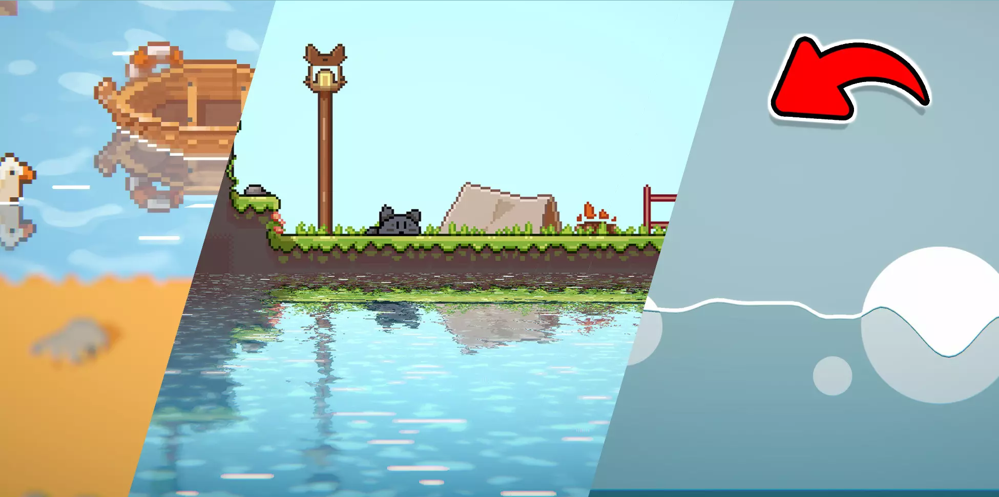
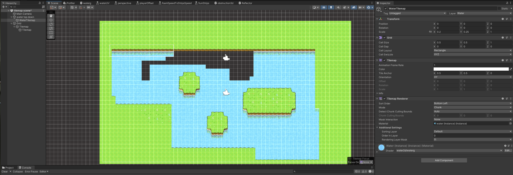
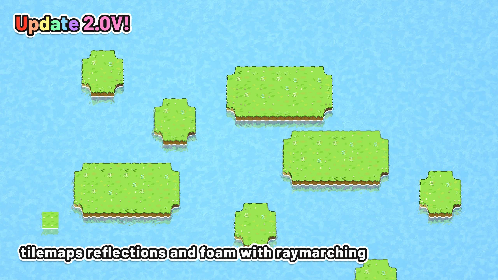
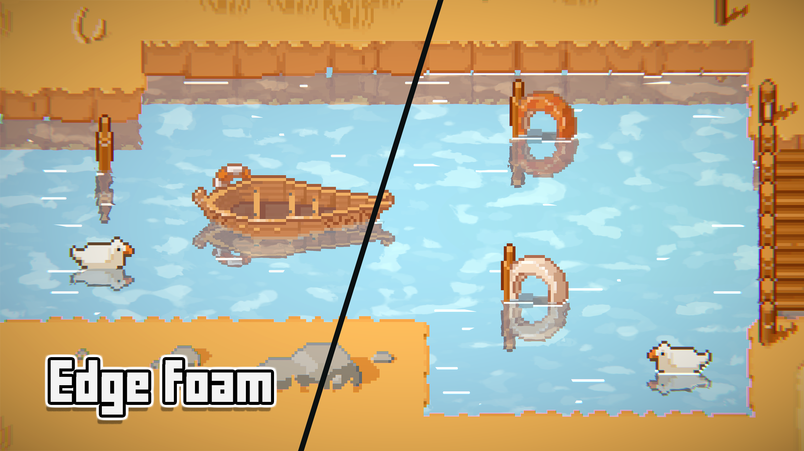
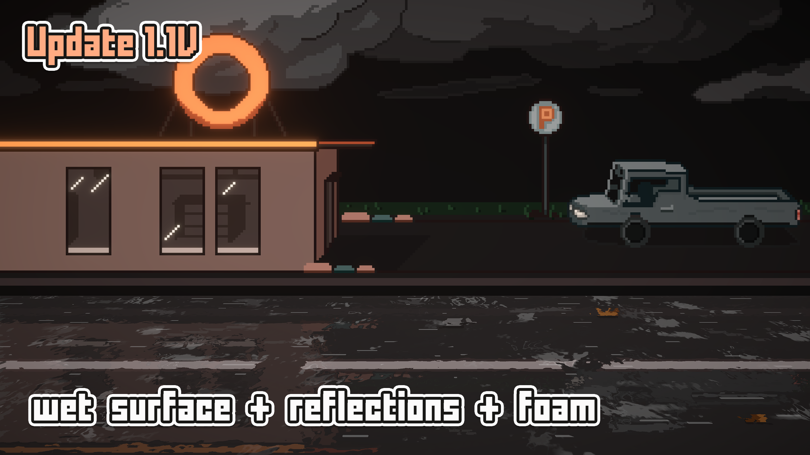
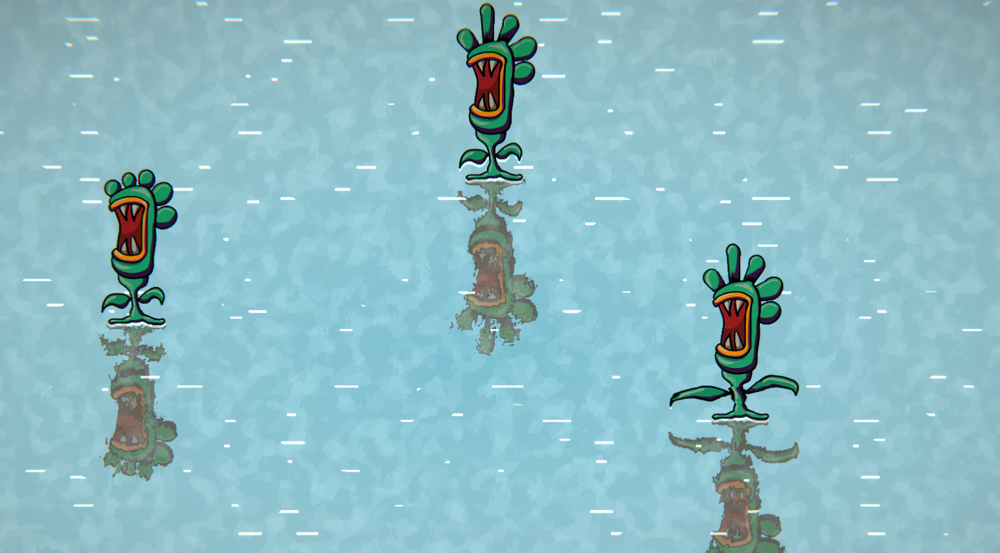
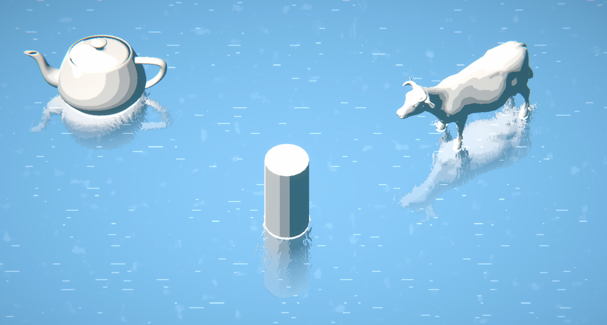
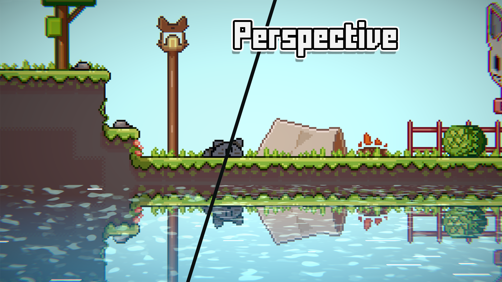
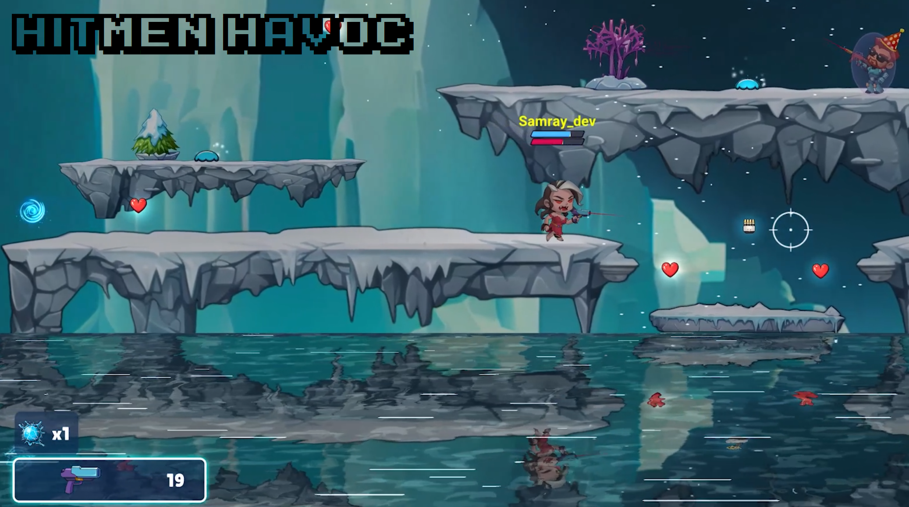
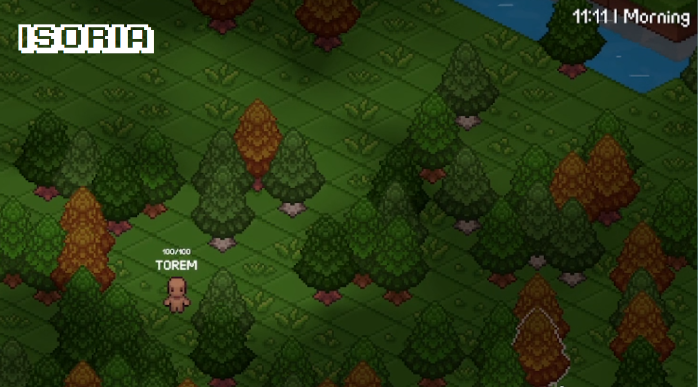

Modern 2D Water
A comprehensive 2D / 2.5D water system for Unity URP — with GPU fluid simulation, three reflection modes, obstructions, surface waves with buoyancy, post-processing blur, tilemap placement, spline support, and full runtime API. Zero setup required. Made with love by Leafo Studio 🍃

Leafo Studio
Made by leafousio — YouTuber, game developer, and asset creator.
Developer of Xenophobia, Rocky Path, Mark in Space.
Modern 2D Water is used for creating rivers, lakes, seas, puddles, wet surfaces, and any other body of water in 2D and 2.5D games. It works with URP (Universal Render Pipeline) in Unity 2021.3+ and supports both orthographic and limited perspective cameras.
The asset is designed to require zero user setup — add the component and the water works immediately. Layers, materials, and manager objects are created automatically.
Demo Videos ▶
First Steps & Setup 🚀
Requirements
| Requirement | Details |
|---|---|
| Unity Version | 2021.3 LTS or newer |
| Render Pipeline | URP (Universal Render Pipeline) — Built-in and HDRP are not supported |
| Color Space | Both Linear and Gamma are supported |
| Camera | Must be tagged MainCamera |
Setup Steps
Ensure URP is Configured
Go to Edit → Project Settings → Graphics and confirm a URP Pipeline Asset is assigned. If starting a new project, use the URP template.
Enable Read/Write on Custom Textures
If you use custom textures for distortion or alpha, enable Read/Write in the texture import settings. The asset's built-in textures already have this enabled.
Add Water to Your Scene
Create an empty GameObject and add the
ModernWater2Dcomponent. A default water sprite is loaded automatically — no sprite assignment needed. Alternatively, drag a water prefab from the demo scenes.Done!
Layers (
Water,WaterPostProcessing) and manager objects (2DWaterManagers) are created automatically. The water is ready to configure in the inspector.
MainCamera tag. The water uses Camera.main for projection matrices, viewport calculations, and reflection rendering.Feature Overview ✦
Coloring & Foam
Single color, two-color gradient, Y-depth gradient, or distance-from-obstructors coloring. Animated foam with speed, density, and color controls. Light strip caustics.
Distortion
Scrolling normal-map distortion with per-axis speed, strength, tiling, and color tinting. Supports custom distortion textures.
3 Reflection Types
Top-down, platformer (mirrored), and raymarched screen-space reflections. Each with independent resolution, falloff, and color controls. All three have similar performance characteristics.
GPU Fluid Simulation
Real-time fluid simulation in object-space (simple) or world-space (advanced). Rain effect, configurable resolution up to 4096², wave propagation with dispersion.
Infinite Water (Advanced Sim)
The advanced simulation runs in world-space, allowing infinite bodies of water with no additional performance cost. The simulation follows the camera at constant quality.
Obstructions
Objects with the Obstructor component create depth data for coloring, foam interaction, and simulation. Configurable edge color, width, and alpha.
Surface Waves
Mesh-deformation surface waves with physics-based splash collisions, rigidbody buoyancy, automatic ambient waves, and configurable spring dynamics.
Post-Processing Blur
Box, gaussian, or bokeh blur applied via a secondary camera pass. Supports vertical falloff for depth-based blur intensity.
Tilemap Mode
Paint water directly onto a tilemap for irregular shapes. Auto-creates a counter-scaled child object so Grid cells stay at world-space 1:1.
Wet Surface / Below Water
Render the scene behind the water with distortion to create wet glass, rainy window, or underwater refraction effects.
URP 2D Lighting
Full support for Unity's URP 2D lighting system. Water receives lights and shadows from 2D light sources.
3 Performance Tiers
Normal (3-layer gradient foam), Cheap (1-layer), and Mobile (no gradient foam). Choose based on your target platform.
Top-Down Water & Tilemap Mode 🗺
Modern 2D Water supports two render modes, selectable in Global Settings → Render Mode.
SpriteRenderer Mode (Default)
The standard mode. The ModernWater2D component lives on a GameObject with a SpriteRenderer. All features are available.
Tilemap Mode
For large, irregularly shaped, or tile-based bodies of water. Switching creates a child object WaterTilemap with Grid, Tilemap, and TilemapRenderer. The child is counter-scaled so Grid cells are always 1:1 in world space.
Paint water tiles on the child's Tilemap component. The water shader and material are applied automatically.

Works: coloring, foam, strips, distortion, obstructions, simulation, all reflections, wet surface, URP lighting, surface texture
Not available: blur post-processing, perspective reflections, surface waves, surface sprite (world-mapped SpriteRenderer overlay)
Top-Down Reflections 🪞
The top-down reflection system renders reflections from an overhead camera angle — the standard look for RPG, strategy, and overhead 2D games with water.
Setup
Enable Reflections → Enable Top Down Reflections in the inspector. The system creates a ReflectionsManagerTD camera automatically.
Key Settings
→ Default reflection x-orientation — flip reflections horizontally if they appear mirrored incorrectly.
→ Angle — rotation angle of top-down reflections in degrees (-90 to 90).
→ Tilt — creates a perspective-like depth effect on the reflections.
→ Falloff start / strength / color — fade reflections based on distance from water edge. Supports mesh reflections.

Platformer Reflections 🪞
The platformer reflection system renders mirrored reflections below a configurable horizontal line — the standard look for side-view 2D games.
Setup
Enable Reflections → Enable Platformer Reflections. The system creates a ReflectionsManagerPL camera that captures specified layers.
Key Settings
→ Custom reflections starting point — override where the mirror line sits vertically.
→ Infinite scrolling — scroll reflections based on a player transform for parallax games.
→ Reflected layers — choose which Unity layers appear in reflections (found in Edit → Project Settings → Tags and Layers).
→ Perspective — pseudo-3D distortion on reflections (SpriteRenderer mode only).
→ Falloff — fade reflections based on distance from the mirror line.

Raymarched Reflections 🪞
The raymarched reflection system uses screen-space raymarching to create high-quality reflections that capture vertical detail above the water surface. Performance is comparable to the other reflection types.
Setup
Enable Reflections → Enable Raymarched Reflections (only available with Normal water type). The system creates a ReflectionsManagerRM camera.
Key Settings
→ Raymarch units — world-space height the raymarch covers above the water. Determines how far up reflections capture.
→ Falloff start / end — UV range where raymarched reflections fade.
→ Reflected layers — which Unity layers are captured.
→ Type2 raymarching — alternative algorithm. Try this if the default produces artifacts.

Obstructions
The obstruction system renders objects that interact with the water — creating depth data for coloring gradients, edge effects, and driving the fluid simulation.
Setup
Enable Obstructions → Enable in the water inspector. Then add the Obstructor component to any GameObject that should interact with the water. The system renders all obstructors to a depth texture that the water shader samples.
Key Settings
→ Resolution — render texture resolution multiplier for the obstruction capture (0–1).
→ Alpha / Color / Width — control the visual edge glow that appears where obstructors meet the water surface.

Simple Simulation (Object-Space) 💧
The simple simulation runs a GPU fluid simulation in the water sprite's local UV space. Ripples propagate from obstructor interactions and optional rain drops. The simulation quality depends on the sprite size — larger sprites have lower effective resolution per unit.
Setup
Enable Simulations → Enable and set simulation type to Simple. Obstructions must also be enabled.
Key Settings
→ Resolution — simulation texture size (256 to 4096, powers of 2). Higher = finer ripples.
→ Iterations — simulation passes per frame. 3 is recommended. More = faster wave speed.
→ Wave height / Dispersion — amplitude and energy decay of the simulation.
→ Rain effect — spawns random ripples across the surface.
| Resolution | High-End PC | Mid PC | Old PC | Mobile |
|---|---|---|---|---|
| Simple (max 4096) | 4096 | 2048 | 1024 | 512 |

Advanced Simulation (World-Space) 🌊
The advanced simulation runs in world space — the simulation texture follows the camera and covers a viewport-relative area. This means the water body can be infinitely large with no additional performance cost. The simulation quality stays constant regardless of how big the water is.
How It Works
The simulation texture covers a slightly larger area than the camera viewport (1.5× margin). As the camera moves, the simulation offsets its content to follow, so ripples persist naturally during camera motion. This is fundamentally different from simple simulation which is locked to the sprite's bounds.
Setup
Enable Simulations → Enable and set simulation type to Advanced. Same controls as simple, but the resolution cap is 2048 instead of 4096.
| Resolution | High-End PC | Mid PC | Old PC | Mobile |
|---|---|---|---|---|
| Advanced (max 2048) | 2048 | 1024 | 512 | 256 |

Wet Surface / Below Water 💦
Renders the scene behind the water and applies distortion — creating effects like rainy windows, underwater refraction, or wet pavement. Uses the SurfaceRenderingManager to capture a layer texture of the scene.
Enable in Wet Surface → Enable. Control visibility with alpha and distortion strength.

Sprite Atlas & Reflection Support 🖼
Sprites used in the reflection system — including those from sprite sheets and sprite atlases — work correctly with all three reflection types. The reflection cameras capture whatever is rendered on the specified layers, so atlas-packed sprites, animated sprites, and spritesheet-based characters all appear in reflections and interact with the obstruction system without any special setup.
Spline Support 〰
The asset supports spline based animated sprites. Sprites with the spline system work with the reflection and obstruction systems.
Check the "splines" demo scene for an example.

Limited Mesh Support ◈
The reflection systems can capture and reflect 3D mesh renderers (not just sprites), and the obstruction system supports mesh-based obstructors. The water surface itself is always 2D.
Check the "3d objects reflections" demo scenes for examples.

Limited Perspective Support 📐
A pseudo-3D perspective mode applies distortion to both the water surface and reflections, creating depth illusion in side-view games. Enable in Reflections → Platformer → Use Perspective.

Prefab & Multi-Scene Workflow 📦
Each water instance creates its own material instance, so multiple water objects can have different settings. Manager objects (2DWaterManagers) are shared and auto-created.
Use Utils → Copy Water Settings in the inspector to clone settings from another water object. Or drag a water prefab from any demo scene.
Properties Overview 🔧
All properties are organized into foldout sections. Every field has a tooltip — hover for a description.
Global Settings
| Property | Description |
|---|---|
renderMode | SpriteRenderer (default) or Tilemap. Controls renderer type. |
waterType | Normal (3-layer foam), Cheap (1-layer), or Mobile (no gradient foam). |
Looks — Alpha & Tiling
| Property | Description |
|---|---|
baseAlpha | Overall water opacity (0–1). |
alphaTexture | Grayscale per-pixel transparency mask. |
_useLighting | Toggle URP 2D lighting on the water. |
tiling | UV tiling of the base water pattern. |
numOfPixels | Pixel count for pixelation effect. |
pixelPerfect | Snap to screen pixels for crisp retro rendering. |
Looks — Coloring
| Property | Description |
|---|---|
coloringType | single_color, two_colors, depthY, or distance_from_obstructors. |
color / depthColor | Primary (edge) and secondary (deep) water colors. |
depthMlp | Distance multiplier for obstruction-based depth coloring. |
colorGradient | Gradient sampled by obstruction distance. |
Looks — Foam, Strips, Distortion
| Property | Description |
|---|---|
foamSpeed / foamColor / foamSize / foamAlpha / foamDensity | Foam scrolling, color, scale, opacity, and visibility threshold. |
stripsAlpha / stripsSize / stripsSpeed / stripsDensity | Light strip caustic controls. |
distortionTexture / distortionSpeed / distortionStrength / distortionTiling | Normal map driving distortion, with scroll, intensity, and tiling. |
distortionColor | Tint on visible distortion waves. |
Reflections
| Property | Description |
|---|---|
enableReflections | Master toggle for all reflection systems. |
enableTopDownReflections | Top-down angle reflections with angle/tilt/falloff. |
enablePlatformerReflections | Mirrored reflections below a horizontal line. |
enableRaymarchedReflections | Screen-space raymarched reflections. |
textureResolution | Resolution multiplier for reflection render textures (0–1). |
usePerspective | Pseudo-3D perspective distortion (SpriteRenderer only). |
Simulation
| Property | Description |
|---|---|
enableSimulation | Toggle GPU fluid simulation. Requires obstructions. |
_waterSimulationType | Simple (object-space, up to 4096²) or Advanced (world-space, up to 2048², infinite water). |
resolution | Simulation texture resolution. Powers of 2. |
iterations | Sim passes per frame. 3 recommended. |
waveHeight / dispersion | Wave amplitude and decay rate. |
enableRain | Random ripple spawning across the surface. |
Surface Waves
| Property | Description |
|---|---|
enableWavesSimulation | Toggle mesh-deformation waves (SpriteRenderer only). |
wavePoints | Vertex count along the wave mesh. |
waveHeight / dampening / spread / stiffness | Spring dynamics for wave behavior. |
splashForceMin / splashForceMax | Kinetic energy thresholds for splash creation. |
enableBuoyancy / enableRigidbodyCollisions | Physics interaction toggles. |
Shaders & Subgraphs ⚙
Built with Shader Graph, organized under Resources/Shaders/.
Shader Variants
| Shader | Usage |
|---|---|
water2d/waterg | Full-featured water shader (Normal type). |
water2d/watergcheap | Reduced-cost shader (Cheap and Mobile types). |
hidden/box · gaussian · bokeh | Post-processing blur passes. |
Subgraph Folders
| Folder | Contents |
|---|---|
water/ | Main water surface shader graphs. |
reflections/ | Reflection sampling and compositing. |
surface sim/ | Simulation texture sampling and UV remapping. |
Obstruction/ | Obstruction depth and edge detection. |
uv/ | UV utilities and transformations. |
blur/ | Post-processing blur shaders. |
subgraphs/ | Shared utility subgraphs. |
parallax/ | Parallax and perspective distortion. |
3d/ | 3D mesh reflection support. |
droplets/ | Water droplet effects. |
heat distortion/ | Heat distortion overlays. |
Code Structure { }
Runtime code under Assets/ModernWater2D/Runtime/.
ModernWater2D
Main component. Manages render mode, materials, manager lifecycle, subsystem coordination.
WaterSimulation
Abstract base. Simple (object-space) and Advanced (world-space) implementations.
water2d/waterg
Shader Graph water shader. Composites all effects.
ReflectionsSystem
Manages reflection cameras. Three instances: TD, PL, RM.
ObstructorManager
Renders obstructors to depth texture for edge data and simulation.
SurfaceRenderingManager
Captures below-water scene for wet surface effects.
ModernWater2DEditor
Custom inspector with foldouts, undo, contextual help.
WaveSimulation
Mesh surface waves. Spring physics, splashes, buoyancy.
ModernWater2DSettings
Serializable settings container with sub-settings.
Key Runtime Folders
| Folder | Contents |
|---|---|
modern water 2d/ | ModernWater2D.cs, editor, settings classes. |
Reflections/ | ReflectionsSystem, camera setup. |
Obstructions/ | ObstructorManager, Obstructor component. |
Surface_Simulation/ | WaterSimulation base, Simple and Advanced. |
Surface Renderer/ | SurfaceRenderingManager. |
Spline/ | Spline-based water mesh generation. |
parents class/ | WaterCryo reactive property system. |
Utils/ | Layer utilities, texture helpers. |
Changing Water at Runtime ⚡
All properties are changeable at runtime via the WaterCryo<T> reactive system — set .value and the shader updates automatically.
var water = GetComponent<ModernWater2D>(); // Change water color water.settings._waterSettings.color.value = Color.blue; // Change foam speed water.settings._waterSettings.foamSpeed.value = new Vector2(0.5f, 0.1f); // Toggle reflections water.enableReflections.value = false; // Switch render mode water.renderMode = WaterRenderMode.Tilemap; water.ApplyRenderMode(); // Access the active material water.ActiveSharedMaterial.SetFloat("_surfaceAlpha", 0.5f);
Key Access Paths
| Path | What It Does |
|---|---|
water.ActiveSharedMaterial | Shared material on whichever renderer is active. |
water.ActiveRenderer | Active Renderer (SpriteRenderer or TilemapRenderer). |
water.ActiveBounds | World-space bounds of the active renderer. |
water.IsTilemapMode / IsSpriteMode | Check current render mode. |
water.settings._waterSettings | Visual settings (color, foam, distortion, etc). |
water.settings._reflectionsSettings | Reflection settings. |
water.settings._simulationSettings | Simulation settings. |
Demo Scenes 🎬
20+ demo scenes in Assets/ModernWater2D/Scenes/demo/.
| Scene | Demonstrates |
|---|---|
| platformer / platformer simple / platformer mixed | Platformer water with reflections. |
| top down / top down puddles / top down lit | Top-down camera water variants. |
| tilemap scene | Tilemap render mode with painted tiles. |
| rain | Rain simulation effect. |
| sea | Large body of water. Infinite fluid simulation, |
| dark scene | Water in dark environment with lighting. |
| distance field | Distance-from-obstructors coloring. |
| custom texture | Custom distortion and alpha textures. |
| overlay on water | Surface texture overlay. |
| parallax scrolling | Infinite scrolling reflections. |
| 3d + perspective | Pseudo-3D perspective distortion. |
| 3d objects reflections | 3D meshes reflecting in 2D water. |
| splines | Spline-based sprites support showcase. |
| wet surface / wet surface lit | Below-water refraction effects. |
| waves platformer (x3) | Surface wave simulation with physics. |
| top down falloff | Top-down reflections with falloff. |
| performance obj... | Performance testing. |
Production tested !


Support & Requests 💬
FAQ ❓
The water is pink / magenta
Your project is not using URP. Switch in Project Settings → Graphics.
Reflections don't show anything
Make sure objects are on layers listed in the reflected layers list. Find layer indices in Edit → Project Settings → Tags and Layers.
Simulation doesn't react to objects
Objects need an Obstructor component and both obstructions + simulation must be enabled.
Water looks different in Tilemap mode
Tilemap UVs scale with bounds. Adjust tiling settings to compensate.
Performance is poor on mobile
Switch to Mobile type, reduce simulation resolution, disable or lower reflection resolution.
Camera.main is null errors
Your camera needs the MainCamera tag.
Can I have multiple water objects?
Yes. Each creates its own material instance. Managers are shared.
Can I use infinite water?
Yes — use the Advanced simulation type. It runs in world-space and follows the camera at constant cost.
Enjoying Modern 2D Water?
Your review helps other devs discover this asset and keeps us motivated. Thank you! 🌊
⭐ Leave a ReviewNeed help? leafousio@gmail.com · Discord